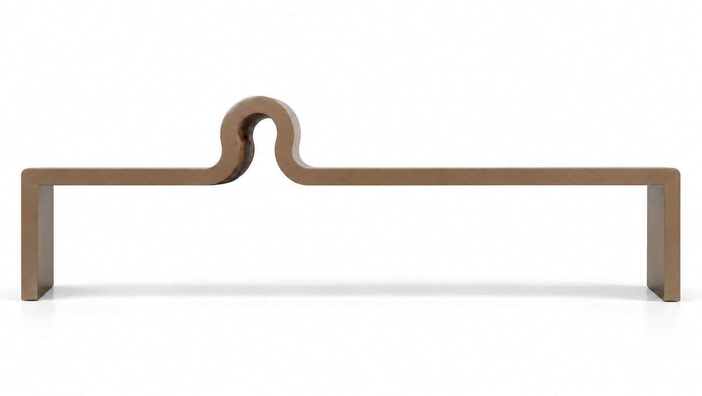
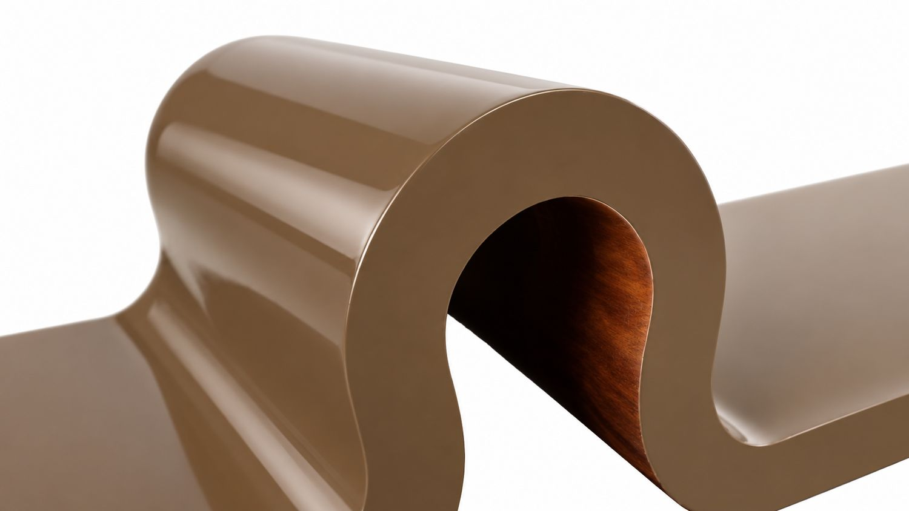
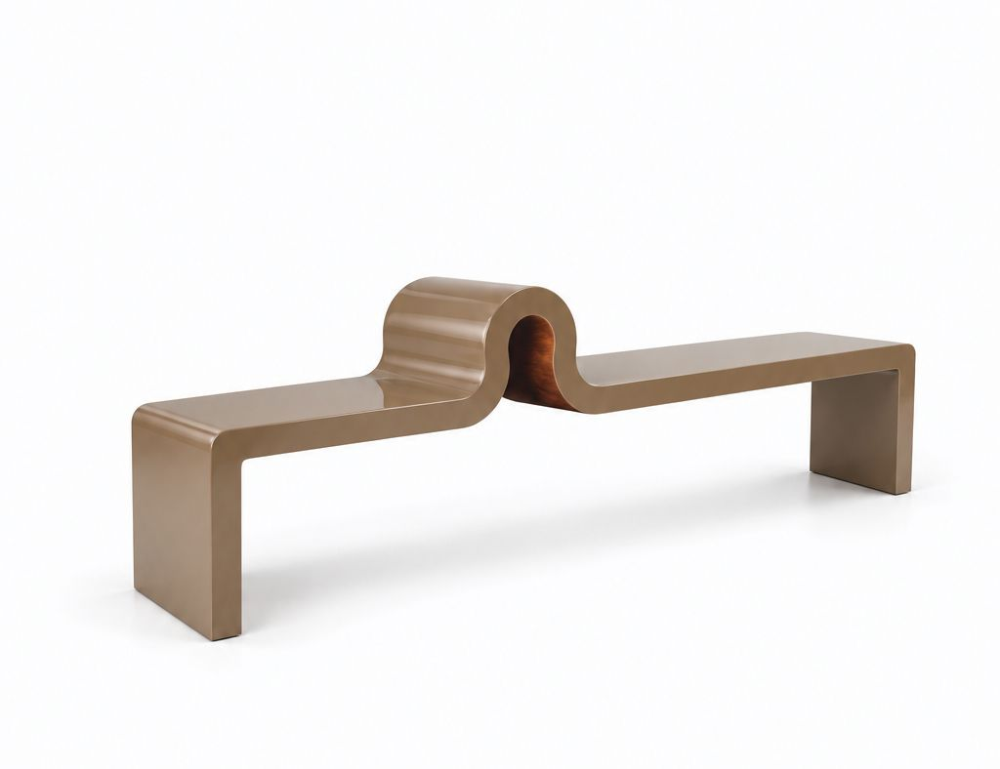

WORK 12 / 29
Elastico
The illusion of elasticity captured in solid timber.
Year2017
MaterialsChanchuri
StageProduced

DESIGN STORY
Elastico questions how we read materials. The bench appears soft, stretched and pulled out of shape, although its structure is rigid and solid. A continuous timber form captures the illusion of elasticity, creating a visual contradiction between weight and lightness, strength and pliability. The result invites a second look at what the material seems capable of doing.
PROJECT LINKS
- Moonlerwww.moonler.com
PROJECT DETAILS
- Brand / Manufacturer
- Moonler
SELECTED PRESENTATIONS
- 2017International Furniture Fair Singapore

